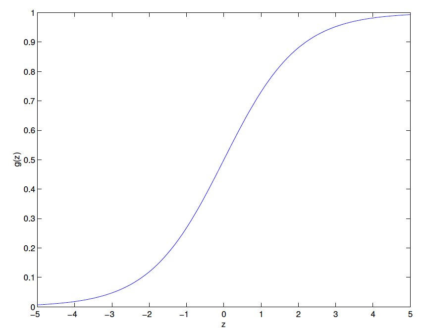

Logistic regression
Change the form for our hypotheses \(h(x)\): \[ h_\theta(x)=g(\theta^Tx)=\frac{1}{1+\exp{(-\theta^Tx)}} \] Logistic function(sigmoid function): \[ g(z)=\frac{1}{1+\exp{(-z)}} \] 
\[ \begin{align}g^{'}(z)&=\frac{d}{dz}\frac{1}{1+\exp{(-z)}} \\ &=\frac{1}{(1+\exp{(-z)})^2} \exp{(-z)} \\ &=\frac{1}{1+\exp{(-z)}} \cdot (1-\frac{1}{1+\exp{(-z)}}) \\ &=g(z) \cdot (1-g(z)) \end{align} \]
How do we fit \(θ\) for it?
Probabilistic assumptions: \[ P(y=1|x;\theta)=h_\theta(x) \\ P(y=0|x;\theta)=1-h_\theta(x) \] Note that this can be written more compactly as \[ p(y|x;\theta)=(h_\theta(x) )^y(1-h_\theta(x) )^{1-y} \] Assuming that the \(n\) training examples were generated independently, we can then write down the likelihood of the parameters as \[ L(\theta)=p(\overrightarrow{y}|X;\theta)=\prod_{i=1}^np(y^{(i)}|x^{(i)};\theta) \\ =\prod_{i=1}^n(h_\theta(x^{(i)}) )^{y^{(i)}}(1-h_\theta(x^{(i)}) )^{1-y^{(i)}} \] As before, it will be easier to maximize the log likelihood: \[ ℓ(θ) = \log{L(θ)}=\sum_{i=1}^ny^{(i)}\log{h_\theta(x^{(i)})}+(1-y^{(i)})\log{(1-h_\theta(x^{(i)}) )} \] Use gradient ascent to maximize the likelihood: \(θ := θ + α∇ℓ(θ)\)
Let’s start by working with just one training example \((x, y)\): \[ \begin{align} \frac{\partial ℓ(θ)}{\partial θ_j}&=(y\frac{1}{h_\theta(x)}-(1-y)\frac{1}{1-h_\theta(x)})\frac{\partial h_\theta(x)}{\partial θ_j} \\ &=(y\frac{1}{g(\theta^Tx)}-(1-y)\frac{1}{1-g(\theta^Tx)})\frac{\partial g(\theta^Tx)}{\partial θ_j} \\ &=(y\frac{1}{g(\theta^Tx)}-(1-y)\frac{1}{1-g(\theta^Tx)}) g(\theta^Tx)(1- g(\theta^Tx))\frac{\partial θ^Tx}{\partial θ_j} \\ &=(y(1- g(\theta^Tx))-(1-y)g(\theta^Tx))x_j \\ &=(y-g(\theta^Tx))x_j \\ &=(y-h_\theta(x))x_j \end{align} \] Stochastic gradient ascent rule: \[ θ_j := θ_j + α(y^{(i)}-h_\theta(x^{(i)}))x^{(i)}_j \] It looks identical to the LMS update rule; but this is not the same algorithm, because \(h_\theta(x^{(i)})\) is now defined as a non-linear function of \(\theta^Tx^{(i)}\).
Digression: The perceptron learning algorithm
Consider modifying the logistic regression method to “force” it to output values that are either 0 or 1 or exactly： \[ g(z)=\begin{cases}1 & z \geq 0\\0 & x < 0\end{cases} \] Let \(h(x) = g(θ^T x)\) as before but using this modified definition of \(g\), and if we use the update rule \[ θ_j := θ_j + α(y^{(i)}-h_\theta(x^{(i)}))x^{(i)}_j \] then we have the perceptron learning algorithn.
Note:
- Even though the perceptron may be cosmetically similar to the other algorithms we talked about, it is actually a very different type of algorithm than logistic regression and least squares linear regression;
- Difficult to endow the perceptron’s predictions with meaningful probabilistic interpretations, or derive the perceptron as a maximum likelihood estimation algorithm.
Fisher scoring algorithm for maximizing ℓ(θ)
Newton’s method (finding a zero of a function) performs the following update: \[ \theta:=\theta-\frac{f(\theta)}{f^{'}(\theta)} \] Interpretation: Approximating the function \(f\) via a linear function that is tangent to \(f\) at the current guess \(θ\), solving for where that linear function equals to zero, and letting the next guess for \(θ\) be where that linear function is zero.

The maxima of \(ℓ\) correspond to points where its first derivative \(ℓ′(θ)\) is zero. So, by letting \(f(θ) = ℓ′(θ)\), we can use the same algorithm to maximize \(ℓ\), and we obtain update rule: \[ \theta:=\theta-\frac{ℓ′(θ)}{ℓ′′(θ)} \] The generalization of Newton’s method: \[ \theta:=\theta-H^{-1}∇_θℓ(θ) \] \(H\) is Hessian matrix, whose entries are given by \(H_{ij}=\frac{\partial^2 ℓ(θ)}{\partial θ_i \partial θ_j}\)
- Faster convergence than (batch) gradient descent, and requires many fewer iterations to get very close to the minimum.
- One iteration of Newton’s can, however, be more expensive than one iteration of gradient descent, since it requires finding and inverting an d-by-d Hessian
When Newton’s method is applied to maximize the logistic regression log likelihood function ℓ(θ), the resulting method is also called Fisher scoring.